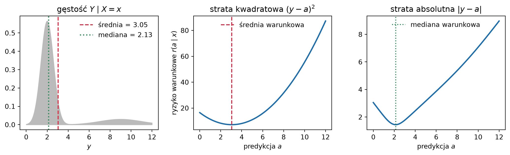
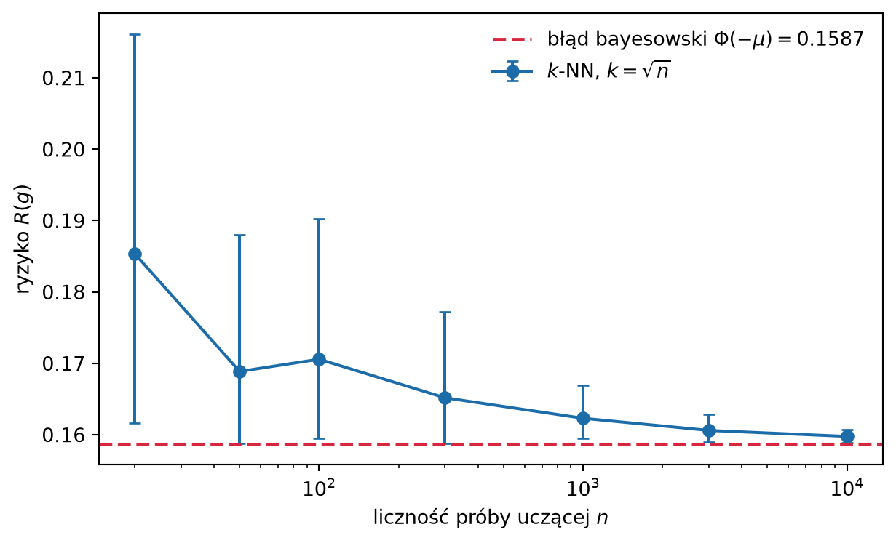

W Sekcja 1.7 wyróżniliśmy dwa cele modelowania: predykcję i wnioskowanie. Ten rozdział dotyczy pierwszego z nich. W regresji predykcja polega na podaniu na podstawie wektora cech \(\x\) wartości \(\widehat y\), która ma być bliska nieznanemu \(y\), w klasyfikacji – na wskazaniu klasy. Jak wycenić taką predykcję, ustaliliśmy w Sekcja 1.6: funkcją straty, której wartość oczekiwana to ryzyko. Lepsza jest reguła o mniejszym ryzyku, a najlepsza – ta, której ryzyko jest najmniejsze. Tam też postawiliśmy pytanie, na które ten rozdział odpowiada: która funkcja \(f\) minimalizuje \(\Risk(f)\)?
Odpowiedź jest zaskakująco produktywna: gdy tylko ustalimy, jak mierzymy stratę, optymalną regułę da się wyprowadzić, zamiast pozostawiać ją naszej intuicji. Okazuje się, że wybór miary straty – a nie wybór algorytmu – przesądza, czego w ogóle szukamy. Ten sam zbiór danych przy stracie kwadratowej i przy stracie absolutnej prowadzi do dwóch różnych odpowiedzi, i obie są poprawne.
Wszystkie wyniki tego rozdziału zakładają, że rozkład łączny \((\X, Y)\) jest znany. Wskazują więc, czego szukamy, ale nie mówią, jak to znaleźć: oszacowanie potrzebnych wielkości z danych to osobne zadanie, omówione w Sekcja 1.8. W literaturze ten materiał nosi nazwę statystycznej teorii decyzji (Hastie, Tibshirani, i Friedman 2009, rozdz. 2.4). My słowa „decyzja” używamy w węższym znaczeniu z Sekcja 1.4: jako wyboru działania na podstawie prawdopodobieństw klas, na przykład ustalenia progu albo odmowy odpowiedzi. Tym zajmujemy się w Sekcja 2.5.
Rozdział buduje ten aparat od podstaw. Wynikiem będą fakty, do których wracamy przez całą książkę: funkcja regresji jako optymalny predyktor przy stracie kwadratowej i klasyfikator bayesowski przy stracie 0–1, a dla obu tych strat – konkretna postać rozkładu ryzyka na błąd redukowalny i nieredukowalny, wprowadzonego ogólnie w Sekcja 1.6.
2.1 Sformułowanie problemu
Przyjmujemy opis probabilistyczny z Sekcja 1.5: para \((\X, Y)\) ma nieznany rozkład łączny \(P\), a jej wartości leżą w \(\mathcal{X} \times \mathcal{Y}\). W regresji \(\mathcal{Y} = \R\), w klasyfikacji \(\mathcal{Y} = \{1, \dots, K\}\). Predyktor to dowolna (mierzalna) funkcja \(f : \mathcal{X} \to \mathcal{Y}\), a strata \(\Loss(y, \widehat y)\) i ryzyko są takie jak w Definicja 1.1: \[
\Risk(f) = \E\big[\Loss(Y, f(\X))\big].
\tag{2.1}\] Ryzyko jest wielkością teoretyczną: liczymy je względem nieznanego rozkładu \(P\), a nie na zbiorze uczącym.
Symbol \(\E\) będzie w tym rozdziale oznaczał średnie po różnych rozkładach, dlatego ustalmy konwencję. Zapis \(\E[\cdots]\) bez warunku to średnia względem rozkładu wszystkich zmiennych losowych występujących w nawiasie: we wzorze (2.1) – pary \((\X, Y)\), a gdy wyrażenie zależy tylko od \(\X\) – rozkładu cech. Zapis \(\E[\cdots \mid \X = \x]\) to średnia względem rozkładu warunkowego \(Y \mid \X = \x\), przy ustalonym \(\x\).
2.2 Redukcja do problemu punktowego
Wzór (2.1) wygląda na trudny do minimalizacji: szukamy funkcji, a nie liczby, i to w przestrzeni wszystkich funkcji mierzalnych. Poniższa obserwacja sprowadza go do zadania, które rozwiązujemy osobno w każdym punkcie \(\x\) – i to ona jest właściwym silnikiem tego rozdziału.
Skorzystajmy z prawa iterowanej wartości oczekiwanej (Sekcja 1.5): średnią po parze \((\X, Y)\) można policzyć w dwóch krokach, najpierw uśredniając przy ustalonych cechach, potem po cechach. Dla ryzyka daje to \[
\Risk(f) =
\underbrace{\E\Big[\,
\underbrace{\E\big[\Loss(Y, f(\X)) \,\big|\, \X \big]}_{\text{średnia po } Y \text{ przy ustalonym } \X}
\,\Big]}_{\text{średnia po } \X}.
\tag{2.2}\] Wewnętrzna średnia to przeciętna strata wśród obiektów o tych samych cechach. Zależy ona od cech, więc jest zmienną losową – funkcją \(\X\), tak jak \(\E(Y \mid \X)\) w Sekcja 1.5. Zewnętrzna średnia uśrednia ją po rozkładzie cech.
Wprowadźmy ryzyko warunkowe w punkcie \(\x\) dla wartości \(a\), którą rozważamy jako predykcję w tym punkcie: \[
r(a \mid \x) = \E\big[\Loss(Y, a) \,\big|\, \X = \x\big].
\tag{2.3}\] Punkt \(\x\) i wartość \(a\) są tu ustalone, losowe jest tylko \(Y\), a średnią liczymy względem rozkładu warunkowego \(Y \mid \X = \x\): \[
r(a \mid \x) = \sum_{y} \Loss(y, a)\, p(y \mid \x)
\qquad\text{albo}\qquad
r(a \mid \x) = \int \Loss(y, a)\, p(y \mid \x)\, dy .
\] Ryzyko warunkowe jest więc liczbą: mówi, ile przeciętnie kosztuje predykcja \(a\) dla obiektów o cechach \(\x\). Wewnętrzna średnia w (2.2) to ta sama wielkość z \(a = f(\x)\), obliczona w wylosowanym punkcie: \(\E\big[\Loss(Y, f(\X)) \mid \X\big] = r(f(\X) \mid \X)\).
Twierdzenie 2.1 (Zasada minimalizacji punktowej) Jeżeli dla każdego \(\x\) istnieje wartość \(\fopt(\x)\) minimalizująca \(r(\cdot \mid \x)\), to funkcja \(\fopt\) minimalizuje ryzyko \(\Risk\) w klasie wszystkich predyktorów.
Dowód. Niech \(f\) będzie dowolnym predyktorem. Z definicji \(\fopt(\x)\) jako minimalizatora zachodzi \(r(\fopt(\x) \mid \x) \le r(f(\x) \mid \x)\) dla każdego \(\x\). Podstawiając \(\X\) w miejsce \(\x\), otrzymujemy nierówność między zmiennymi losowymi \(r(\fopt(\X) \mid \X)\) i \(r(f(\X) \mid \X)\). Nierówność ta zachowuje się przy uśrednianiu po rozkładzie \(\X\), więc na mocy (2.2) \[
\Risk(\fopt) = \E\big[r(\fopt(\X) \mid \X)\big]
\;\le\; \E\big[r(f(\X) \mid \X)\big] = \Risk(f). \qquad\square
\]
WskazówkaCo ten wynik naprawdę mówi
Nie ma tu żadnego kompromisu między punktami. Optymalny predyktor nie musi „poświęcać” dokładności w jednym obszarze przestrzeni cech, żeby zyskać w innym – predykcje w różnych punktach \(\x\) wybieramy całkowicie niezależnie.
To brzmi banalnie, ale ma konsekwencję, która banalna nie jest: każdy kompromis, jaki obserwujemy w praktyce, bierze się z ograniczeń klasy modeli lub ze skończoności próby, a nie z natury problemu. Model liniowy musi wyważać dopasowanie w różnych obszarach tylko dlatego, że jest liniowy. Gdyby wolno nam było wybrać dowolną funkcję i gdybyśmy znali \(P\), żaden kompromis by nie istniał.
Widać tu też rolę obu czynników rozkładu łącznego (1.1). Ryzyko warunkowe \(r(a \mid \x)\) zależy wyłącznie od rozkładu warunkowego \(Y \mid \X = \x\), więc optymalna predykcja w punkcie \(\x\) nie zależy od rozkładu brzegowego cech \(p(\x)\). Ten pojawia się dopiero w zewnętrznej wartości oczekiwanej we wzorze (2.2): waży punkty, decydując, ile wnosi do ryzyka błąd popełniony w danym obszarze przestrzeni cech – tak jak zapowiedzieliśmy w Sekcja 1.5.
Od tej chwili wystarczy więc odpowiadać na pytanie: dla danej straty \(\Loss\) i danego rozkładu warunkowego \(Y \mid \X = \x\), która wartość \(a\) minimalizuje (2.3)? Odpowiedź zależy wyłącznie od \(\Loss\) – i to właśnie dlatego wybór funkcji straty jest częścią modelowania, a nie szczegółem technicznym.
2.3 Regresja: strata kwadratowa i strata absolutna
2.3.1 Funkcja regresji
Twierdzenie 2.2 (Optymalność funkcji regresji) Niech \(\mathcal{Y} = \R\), \(\Loss(y, a) = (y - a)^2\) i niech \(\E[Y^2] < \infty\). Wtedy ryzyko (2.1) jest minimalizowane przez funkcję regresji\[
\fopt(\x) = \E(Y \mid \X = \x).
\tag{2.4}\]
Dowód. Na mocy Twierdzenie 2.1 wystarczy dla ustalonego \(\x\) zminimalizować \(r(a \mid \x) = \E[(Y - a)^2 \mid \X = \x]\) względem \(a \in \R\). Oznaczmy \(m = \E(Y \mid \X = \x)\) i rozłóżmy różnicę \(Y - a = (Y - m) + (m - a)\): \[
\E\big[(Y-a)^2 \mid \X = \x\big]
= \E\big[(Y-m)^2 \mid \X=\x\big] + 2(m-a)\,\E\big[Y-m \mid \X=\x\big] + (m-a)^2 .
\] Środkowy składnik znika, ponieważ \(\E[Y - m \mid \X = \x] = m - m = 0\). Zostaje \[
r(a \mid \x) = \Var(Y \mid \X = \x) + (m - a)^2 .
\tag{2.5}\] Pierwszy składnik nie zależy od \(a\), drugi jest nieujemny i zeruje się dokładnie dla \(a = m\). Zatem \(\fopt(\x) = m = \E(Y \mid \X = \x)\). \(\qquad\square\)
Wyprowadzenie dało nam więcej niż samą tezę. Równanie (2.5) mówi, że nawet optymalny predyktor ma niezerowe ryzyko, równe \(\Var(Y \mid \X = \x)\). Wrócimy do tego w Sekcja 2.3.3.
2.3.2 Strata absolutna
Zmieńmy jedno założenie – stratę – i zobaczmy, jak zmienia się odpowiedź.
Twierdzenie 2.3 (Optymalność mediany warunkowej) Przy stracie \(\Loss(y, a) = |y - a|\) ryzyko (2.1) jest minimalizowane przez medianę warunkową\[
\fopt(\x) = \med(Y \mid \X = \x).
\tag{2.6}\]
Dowód. Ustalmy \(\x\) i oznaczmy przez \(F\) dystrybuantę rozkładu \(Y \mid \X = \x\). Dla prostoty zakładamy, że \(F\) jest ciągła. Rozbijając wartość oczekiwaną według znaku \(Y - a\), mamy \[
r(a \mid \x) = \int_{-\infty}^{a} (a - y)\,dF(y) + \int_{a}^{\infty} (y - a)\,dF(y).
\] Różniczkując po \(a\) (składniki brzegowe znoszą się, bo podcałkowa funkcja zeruje się w \(y = a\)): \[
\frac{\partial r}{\partial a}(a \mid \x) = F(a) - \big(1 - F(a)\big) = 2F(a) - 1 .
\] Pochodna jest ujemna dla \(F(a) < \tfrac12\) i dodatnia dla \(F(a) > \tfrac12\), a funkcja \(r(\cdot \mid \x)\) jest wypukła jako suma funkcji wypukłych. Minimum przypada więc tam, gdzie \(F(a) = \tfrac12\), czyli w medianie rozkładu warunkowego. \(\qquad\square\)
Bez założenia ciągłości rozumowanie przenosi się na pochodne jednostronne: minimum osiąga każda mediana, czyli każde \(a\) spełniające \(F(a^-) \le \tfrac12 \le F(a)\) – w ogólności nie jest ona jednoznaczna.
Symbol \(\fopt\) oznacza więc predyktor optymalny przy danej stracie – zmiana straty zmienia to, co się pod nim kryje. Gdy strata nie jest wskazana, \(\fopt\) oznacza, tak jak w Sekcja 1.5, funkcję regresji.
WażneWybór straty jest wyborem merytorycznym
Twierdzenia Twierdzenie 2.2 i Twierdzenie 2.3 dają różne odpowiedzi na to samo pytanie o ten sam rozkład. Gdy rozkład warunkowy jest skośny, średnia i mediana potrafią leżeć daleko od siebie – i wtedy pytanie „jaka jest najlepsza predykcja?” nie ma sensu, dopóki nie powiemy, co uznajemy za stratę.
Strata kwadratowa karze duże błędy proporcjonalnie do kwadratu, więc jeden gruby błąd waży tyle co wiele drobnych: predyktor jest przyciągany w stronę ogona rozkładu. Strata absolutna waży wszystkie błędy liniowo i dlatego prowadzi do estymatora odpornego na obserwacje odstające.
To nie jest wybór między „dokładniejszym” a „mniej dokładnym” narzędziem. Przy stracie kwadratowej jeden błąd o wartości 10 kosztuje tyle, co sto błędów o wartości 1 (por. Sekcja 1.6), przy absolutnej – tyle, co dziesięć. Wybór straty to rozstrzygnięcie, która z tych wycen lepiej oddaje koszty w Twoim zastosowaniu.
Zilustrujmy to numerycznie na rozkładzie warunkowym, dla którego średnia i mediana wyraźnie się rozjeżdżają.
Kod
import numpy as npimport matplotlib.pyplot as pltrng = np.random.default_rng(2024)# Skośny rozkład warunkowy: mieszanka wąskiej masy i długiego prawego ogona.# Dzięki skośności średnia i mediana wyraźnie się rozchodzą.n =20_000skladnik = rng.random(n) <0.85y = np.where(skladnik, rng.normal(2.0, 0.6, n), # masa główna rng.normal(9.0, 2.0, n)) # ogonsrednia = y.mean()mediana = np.median(y)siatka = np.linspace(0, 12, 400)# Ryzyko warunkowe estymowane metodą Monte Carlo dla obu strat.ryzyko_kw = ((y[None, :] - siatka[:, None]) **2).mean(axis=1)ryzyko_abs = np.abs(y[None, :] - siatka[:, None]).mean(axis=1)fig, osie = plt.subplots(1, 2, figsize=(9.5, 3.8), sharex=True)for ax, ryzyko, opt, etykieta, tytul in [ (osie[0], ryzyko_kw, srednia, "średnia warunkowa", r"strata kwadratowa $(y-a)^2$"), (osie[1], ryzyko_abs, mediana, "mediana warunkowa", r"strata absolutna $|y-a|$"),]: ax.plot(siatka, ryzyko, color="#1B6CA8", lw=2) ax.axvline(opt, color="#D7263D", ls="--", lw=1.5, label=f"{etykieta} = {opt:.2f}") ax.set_xlabel("predykcja $a$") ax.set_title(tytul) ax.legend(loc="upper center", frameon=False)osie[0].set_ylabel(r"ryzyko warunkowe $r(a \mid x)$")plt.tight_layout()plt.show()

Rysunek 2.1: Ryzyko warunkowe \(r(a \mid \x)\) jako funkcja predykcji \(a\) dla skośnego rozkładu warunkowego \(Y \mid \X = \x\). Strata kwadratowa (po lewej) jest minimalizowana przez średnią warunkową, strata absolutna (po prawej) – przez medianę. Dla rozkładu skośnego te dwa punkty są od siebie odległe.
Minima obu krzywych leżą w innych miejscach, choć rozkład warunkowy jest ten sam. Przy stracie kwadratowej długi prawy ogon przeciąga optymalną predykcję w prawo; przy stracie absolutnej ogon jest bez znaczenia, bo liczy się tylko to, po której stronie predykcji leży masa prawdopodobieństwa.
2.3.3 Rozkład ryzyka przy stracie kwadratowej
W Sekcja 1.6 rozdzieliliśmy ryzyko na błąd redukowalny i nieredukowalny, nie podając ich postaci. Wróćmy do straty kwadratowej: dla niej możemy je teraz wyznaczyć. Zapytajmy, ile traci predyktor \(f\), który nie jest optymalny. Uśredniając (2.5) po rozkładzie \(\X\), dostajemy
\[
\underbrace{\E\big[(Y - f(\X))^2\big]}_{\text{ryzyko } f}
=
\underbrace{\E\Big[\big(\fopt(\X) - f(\X)\big)^2\Big]}_{\text{błąd redukowalny}}
+
\underbrace{\E\big[\Var(Y \mid \X)\big]}_{\text{błąd nieredukowalny}} .
\tag{2.7}\] Średnie po obu stronach liczymy po różnych rozkładach. Po lewej stronie występują \(\X\) i \(Y\), więc uśredniamy po parze \((\X, Y)\). Po prawej stronie \(Y\) już nie ma: zniknęło przy uśrednianiu przy ustalonym \(\X\) w (2.5). Oba składniki są funkcjami samego \(\X\) i uśredniamy je po rozkładzie cech.
Błąd redukowalny okazuje się średnim kwadratem odległości predyktora od funkcji regresji, a nieredukowalny – średnią wariancją warunkową wyniku, czyli średnią wariancją szumu \(\varepsilon\) z (1.3). Ten drugi zależy od rozkładu warunkowego \(Y \mid \X\), a więc – jak zauważyliśmy w Sekcja 1.6 – od zestawu cech, a nie od modelu.
Rozkład (2.7) jest zalążkiem kompromisu obciążenie–wariancja. W Rozdział 4 rozbijemy człon redukowalny dalej – na część wynikającą ze zbyt ubogiej klasy modeli i część wynikającą ze skończoności próby.
2.4 Klasyfikacja: strata 0–1 i klasyfikator bayesowski
Przejdźmy do \(\mathcal{Y} = \{1, \dots, K\}\) i straty 0–1 (1.6), która karze każdą pomyłkę tak samo. Jak zauważyliśmy w Sekcja 1.6, ryzyko jest przy niej prawdopodobieństwem błędnej klasyfikacji. Klasyfikatory, czyli predyktory o wartościach w zbiorze klas, oznaczamy literą \(g\). Prawdopodobieństwa klas zapisujemy, jak w Sekcja 1.5, jako \(\eta_k(\x) = \Prob(Y = k \mid \X = \x)\).
Twierdzenie 2.4 (Optymalność reguły Bayesa) Spośród wszystkich klasyfikatorów \(g : \mathcal{X} \to \{1, \dots, K\}\) prawdopodobieństwo błędu \(\Prob\big(g(\X) \neq Y\big)\) minimalizuje klasyfikator bayesowski\[
\Bayes(\x) = \argmax_{k} \; \eta_k(\x).
\tag{2.8}\]
Dowód. Zastosujmy Twierdzenie 2.1. Ryzyko warunkowe wskazania klasy \(a\) w punkcie \(\x\) wynosi \[
r(a \mid \x) = \E\big[\ind(Y \neq a) \mid \X = \x\big]
= \Prob(Y \neq a \mid \X = \x)
= 1 - \eta_a(\x).
\] Minimalizacja \(r(\cdot \mid \x)\) jest więc równoważna maksymalizacji \(\eta_a(\x)\) po \(a\), co daje dokładnie (2.8). Ponieważ zachodzi to punktowo dla każdego \(\x\), minimalizowane jest również ryzyko uśrednione po rozkładzie \(\X\). \(\qquad\square\)
Ryzyko klasyfikatora bayesowskiego nazywamy błędem bayesowskim: \[
\Risk^{*} = \Prob\big(\Bayes(\X) \neq Y\big)
= \E\Big[1 - \max_{k} \eta_k(\X)\Big].
\tag{2.9}\] Ostatnie wyrażenie zależy już tylko od \(\X\), więc średnią liczymy po rozkładzie cech: w każdym punkcie \(\x\) pomyłka zdarza się z prawdopodobieństwem \(1 - \max_k \eta_k(\x)\), a \(\E\) uśrednia te prawdopodobieństwa po \(\x\).
Błąd bayesowski jest więc błędem nieredukowalnym z Sekcja 1.6, wyznaczonym dla straty 0–1. Tak jak dla straty kwadratowej, możemy wyznaczyć również część redukowalną. Ryzyko warunkowe wskazania klasy \(a\) rozkłada się na \[
r(a \mid \x) = 1 - \eta_a(\x)
= \big(1 - \max_k \eta_k(\x)\big) + \big(\max_k \eta_k(\x) - \eta_a(\x)\big).
\] Pierwszy składnik to ryzyko warunkowe klasyfikatora bayesowskiego. Drugi jest nieujemny i zeruje się dokładnie wtedy, gdy \(a\) jest klasą o największym prawdopodobieństwie. Uśredniając po rozkładzie \(\X\), dostajemy odpowiednik (2.7): \[
\underbrace{\Prob\big(g(\X) \neq Y\big)}_{\text{ryzyko } g}
=
\underbrace{\E\Big[\max_k \eta_k(\X) - \eta_{g(\X)}(\X)\Big]}_{\text{błąd redukowalny}}
+
\underbrace{\Risk^{*}}_{\text{błąd nieredukowalny}} .
\tag{2.10}\]
Dla dwóch klas różnica \(\max_k \eta_k(\x) - \eta_{g(\x)}(\x)\) wynosi \(0\), gdy \(g(\x) = \Bayes(\x)\), a w przeciwnym razie \(|\eta_1(\x) - \eta_2(\x)| = |2\eta_1(\x) - 1|\). Błąd redukowalny jest więc równy \[
\E\Big[\,|2\eta_1(\X) - 1| \cdot \ind\big(g(\X) \neq \Bayes(\X)\big)\Big].
\] Nie liczy on po prostu, jak często \(g\) nie zgadza się z regułą Bayesa, lecz waży każdą niezgodność tym, jak wyraźnie jedna klasa przeważa w danym punkcie. Niezgodność blisko granicy decyzyjnej, gdzie \(\eta_1(\x) \approx \tfrac12\), prawie nic nie kosztuje. W obszarze, gdzie \(\eta_1(\x)\) jest bliskie \(0\) lub \(1\), kosztuje niemal całą pomyłkę.
Oba rozkłady, (2.7) i (2.10), mają tę samą budowę: ryzyko dowolnego predyktora to ryzyko predyktora optymalnego plus nieujemna nadwyżka, mierząca odległość od optimum. Przy stracie kwadratowej jest nią średni kwadrat odległości od funkcji regresji, przy stracie 0–1 – średnie prawdopodobieństwo trafienia utracone przez wybór gorszej klasy.
AdnotacjaBłąd bayesowski to nie jest wada modelu
\(\Risk^{*}\) jest zwykle dodatni i przy ustalonych cechach nie da się go zmniejszyć żadnym modelem, żadną ilością danych ani żadną mocą obliczeniową. Jest dodatni zawsze, gdy istnieje obszar przestrzeni cech o dodatnim prawdopodobieństwie, w którym \(\eta_k(\x)\) nie koncentruje się na jednej klasie – czyli gdy te same cechy występują u obiektów o różnych etykietach.
Praktyczna konsekwencja: gdyby błąd bayesowski problemu wynosił 7%, to klasyfikator z błędem 7,2% mógłby zyskać na dalszym strojeniu co najwyżej 0,2 punktu procentowego. Większej poprawy trzeba by szukać nie w modelu, lecz w cechach – w informacji, której obecne cechy nie zawierają. Wartości \(\Risk^{*}\) zwykle nie znamy, ale już sama świadomość, że taki próg istnieje, chroni przed oczekiwaniem, że dość dobry model osiągnie błąd bliski zera.
2.5 Od prawdopodobieństw do decyzji
W Sekcja 1.4 rozdzieliliśmy w klasyfikacji dwa etapy: oszacowanie prawdopodobieństw klas \(\eta_k(\x)\) i wybór klasy za pomocą reguły decyzyjnej. Klasyfikator bayesowski jest jedną z takich reguł – optymalną przy stracie 0–1. Ta sekcja odpowiada na dwa pytania: dlaczego model powinien zwracać właśnie \(\eta_k(\x)\) i jak wybrać regułę decyzyjną, gdy strata 0–1 nie opisuje dobrze kosztów zastosowania. Oba pytania rozstrzyga ta sama zasada minimalizacji punktowej.
2.5.1 Predykcja probabilistyczna
Niech \(\mathcal{Y} = \{0, 1\}\) i \(\eta(\x) = \Prob(Y = 1 \mid \X = \x)\). Model zamiast etykiety zwraca liczbę \(p \in [0, 1]\), która ma być prawdopodobieństwem klasy \(1\). Taka predykcja ma inną postać niż \(y\) i nie da się jej „trafić”: \(Y\) przyjmuje tylko wartości \(0\) i \(1\), więc strata \(\Loss(y, p)\) musi nagradzać coś innego niż zgodność \(p\) z \(y\). Rozważmy dwie popularne straty: stratę Briera i stratę logarytmiczną, \[
\Loss_{\mathrm{B}}(y, p) = (y - p)^2, \qquad
\Loss_{\log}(y, p) = -y \ln p - (1 - y) \ln(1 - p).
\] Druga to ujemny logarytm prawdopodobieństwa, które model przypisał zaobserwowanej klasie; o jej roli w uczeniu wspominaliśmy w Sekcja 1.8.
Dla straty Briera nie trzeba nic liczyć. \(Y\) jest zmienną liczbową o wartościach \(0\) i \(1\), więc \(\E(Y \mid \X = \x) = \eta(\x)\) i Twierdzenie 2.2 daje od razu \(\fopt(\x) = \eta(\x)\). Dla straty logarytmicznej ryzyko warunkowe wynosi \[
r(p \mid \x) = -\eta(\x) \ln p - \big(1 - \eta(\x)\big) \ln(1 - p).
\] Jest to funkcja wypukła zmiennej \(p\), a jej pochodna \(-\eta(\x)/p + \big(1 - \eta(\x)\big)/(1 - p)\) zeruje się dokładnie dla \(p = \eta(\x)\). Obie straty prowadzą więc do tego samego optimum: najlepiej jest podać prawdziwe prawdopodobieństwo warunkowe. Straty o tej własności nazywamy właściwymi (ang. proper scoring rules).
Nie każda strata ją ma. Dla straty absolutnej \(|y - p|\) ryzyko warunkowe \[
r(p \mid \x) = \eta(\x)\,(1 - p) + \big(1 - \eta(\x)\big)\, p
\] jest liniowe w \(p\), więc minimum leży na końcu przedziału: \(p = 1\), gdy \(\eta(\x) > \tfrac12\), i \(p = 0\) w przeciwnym razie. Model oceniany tą stratą zwraca zatem etykietę klasyfikatora bayesowskiego zamiast prawdopodobieństwa i traci informację o tym, jak pewna jest ta etykieta. Tymczasem właśnie tej informacji potrzebują obie reguły decyzyjne omówione poniżej.
2.5.2 Straty niesymetryczne i próg decyzyjny
Strata 0–1 zakłada, że wszystkie pomyłki kosztują tyle samo. W diagnostyce medycznej, wykrywaniu oszustw czy filtrowaniu spamu założenie to jest fałszywe i zwykle kosztowne. Ogólniej, dla macierzy kosztów \(\Loss(y, a) = c_{y a}\) ryzyko warunkowe wynosi \[
r(a \mid \x) = \sum_{k=1}^{K} c_{k a} \,\eta_k(\x),
\] a Twierdzenie 2.1 daje regułę optymalną \[
\fopt(\x) = \argmin_{a} \sum_{k=1}^{K} c_{k a} \,\eta_k(\x).
\tag{2.11}\]
W przypadku dwuklasowym z kosztami \(c_{10}\) (fałszywie ujemny) i \(c_{01}\) (fałszywie dodatni), przy zerowym koszcie trafnych decyzji (\(c_{00} = c_{11} = 0\)), reguła (2.11) redukuje się do progowania prawdopodobieństwa warunkowego na poziomie \(c_{01}/(c_{01} + c_{10})\) zamiast na \(\tfrac12\).
WskazówkaDobry model, zły próg
Warto zauważyć, co (2.11) oddziela. Prawdopodobieństwa \(\eta_k(\x)\) zależą wyłącznie od zjawiska, koszty \(c_{ya}\) – wyłącznie od zastosowania. Wynika stąd praktyczna zasada: model powinien estymować prawdopodobieństwa, a próg decyzyjny należy dobierać osobno, na etapie wdrożenia.
Model zwracający twardą etykietę zamiast prawdopodobieństwa zamyka tę drogę: przy zmianie kosztów trzeba go uczyć od nowa.
Predykcja probabilistyczna i reguła kosztowa składają się na dwa etapy z Sekcja 1.4. Pierwszy etap oceniamy stratą właściwą, a jego optimum \(\eta(\x)\) nie zależy od kosztów zastosowania. W drugim podstawiamy to oszacowanie do reguły (2.11).
2.5.3 Opcja odmowy
Wróćmy do \(K\) klas i dopuśćmy dodatkową decyzję: model może odmówić odpowiedzi i przekazać przypadek człowiekowi. Decyzji jest wtedy więcej niż etykiet: do klas \(1, \dots, K\) dochodzi odmowa. Stratę rozszerzamy na nową decyzję tak, że wskazanie klasy oceniamy jak w stracie 0–1, a odmowa kosztuje stałą kwotę \(d \in (0, 1)\), niezależnie od prawdziwej klasy: \[
\Loss(y, k) = \ind(y \neq k), \qquad \Loss(y, \text{odmowa}) = d.
\] Ryzyko warunkowe wskazania klasy \(k\) znamy z dowodu Twierdzenie 2.4: \(r(k \mid \x) = 1 - \eta_k(\x)\). Ryzyko warunkowe odmowy wynosi po prostu \(d\). Najlepszą klasą jest \(\Bayes(\x)\), a jej ryzyko warunkowe to \(1 - \max_k \eta_k(\x)\). Reguła optymalna ma więc postać \[
\fopt(\x) =
\begin{cases}
\Bayes(\x), & \text{gdy } 1 - \max_k \eta_k(\x) \le d, \\
\text{odmowa}, & \text{w przeciwnym razie}.
\end{cases}
\tag{2.12}\] Jest to reguła Chowa: odmawiamy, gdy nawet najbardziej prawdopodobna klasa daje szansę pomyłki większą niż koszt odmowy. Przypadki skrajne potwierdzają intuicję. Ponieważ \(\max_k \eta_k(\x) \ge 1/K\), przy \(d \ge (K-1)/K\) odmowa nigdy się nie opłaca i wracamy do klasyfikatora bayesowskiego. Przy \(d\) bliskim zeru model odpowiada tylko tam, gdzie jest niemal pewny.
Minimalne ryzyko wynosi teraz \(\E\big[\min\big(1 - \max_k \eta_k(\X),\, d\big)\big]\), ze średnią po rozkładzie cech, i nie przekracza błędu bayesowskiego (2.9). Opcja odmowy nie usuwa niepewności. Pozwala jedynie wymienić pomyłki w najtrudniejszych obszarach przestrzeni cech na stały, znany z góry koszt. Podobnie jak reguła kosztowa, reguła Chowa wymaga prawdopodobieństw \(\eta_k(\x)\), a nie samej etykiety.
2.6 Nieosiągalność optimum
Wszystkie twierdzenia tego rozdziału mają tę samą wadę: ich teza odwołuje się do rozkładu \(P\), którego nie znamy. \(\E(Y \mid \X = \x)\) i \(\eta_k(\x)\) to wielkości teoretyczne. Reguła bayesowska nie jest algorytmem, który można uruchomić – jest wzorcem, do którego algorytmy się zbliżają.
Wartość tego wzorca jest jednak praktyczna: pozwala oceniać algorytmy przez pytanie, jak dobrze estymują \(\eta_k(\x)\), i pozwala wiedzieć, kiedy przestać. Poniższy eksperyment pokazuje jedno i drugie na przykładzie, w którym błąd bayesowski znamy dokładnie.
Rozważmy dwie równoliczne klasy o rozkładach \(\Nrozk(-\mu, 1)\) i \(\Nrozk(\mu, 1)\) na prostej. Z symetrii \(\eta(x) = \Prob(Y=1 \mid X=x) > \tfrac12\) dokładnie dla \(x > 0\), więc reguła bayesowska to \(\Bayes(x) = \ind(x > 0)\), a błąd bayesowski wynosi \[
\Risk^{*} = \Prob\big(\Nrozk(\mu, 1) < 0\big) = \Phi(-\mu),
\] gdzie \(\Phi\) to dystrybuanta rozkładu normalnego standardowego.
Kod
import numpy as npimport matplotlib.pyplot as pltfrom scipy.stats import normfrom sklearn.neighbors import KNeighborsClassifierrng = np.random.default_rng(7)mu =1.0blad_bayesa = norm.cdf(-mu)def probka(n, rng):"""Losuje n obserwacji z równoliczną mieszanką N(-mu,1) i N(mu,1).""" y = rng.integers(0, 2, n) x = rng.normal(np.where(y ==1, mu, -mu), 1.0)return x.reshape(-1, 1), y# Ryzyko liczymy DOKŁADNIE, a nie na zbiorze testowym. Rozkład jest nam znany,# więc zamiast losować dane testowe całkujemy definicję ryzyka:## R(g) = 0.5 * P(g(X)=0, klasa 1) + 0.5 * P(g(X)=1, klasa 0)# = 0.5 * \int phi(x-mu) 1{g(x)=0} dx + 0.5 * \int phi(x+mu) 1{g(x)=1} dx## Zaleta jest zasadnicza: wynik nie ma szumu Monte Carlo, więc krzywa nie# przecina błędu bayesowskiego przypadkiem. Uboczna: jest szybciej.siatka = np.linspace(-7, 7, 4001)gestosc_klasy1 = norm.pdf(siatka - mu)gestosc_klasy0 = norm.pdf(siatka + mu)def ryzyko_dokladne(klasyfikator):"""Prawdopodobieństwo błędu klasyfikatora, liczone całkowaniem.""" etykiety = klasyfikator.predict(siatka.reshape(-1, 1)) calka =0.5* np.trapezoid(np.where(etykiety ==0, gestosc_klasy1, 0.0), siatka) \+0.5* np.trapezoid(np.where(etykiety ==1, gestosc_klasy0, 0.0), siatka)return calkalicznosci = np.array([20, 50, 100, 300, 1000, 3000, 10_000])powtorzenia =25bledy = np.empty((len(licznosci), powtorzenia))for i, n inenumerate(licznosci):for j inrange(powtorzenia): X_tr, y_tr = probka(n, rng)# k rosnące z n: warunek zbieżności k-NN do reguły bayesowskiej# (k -> oo oraz k/n -> 0); szczegóły w @sec-knn. k =max(1, int(round(np.sqrt(n)))) klf = KNeighborsClassifier(n_neighbors=k).fit(X_tr, y_tr) bledy[i, j] = ryzyko_dokladne(klf)srednie = bledy.mean(axis=1)# Rozkład ryzyka po próbach uczących jest skośny i ograniczony z dołu przez# błąd bayesowski, więc przedział "średnia +- odchylenie" wystawałby poniżej# granicy, której przekroczyć się nie da. Używamy kwantyli.kwantyle = np.quantile(bledy, [0.1, 0.9], axis=1)wasy = np.abs(kwantyle - srednie)fig, ax = plt.subplots(figsize=(6.5, 4.0))ax.errorbar(licznosci, srednie, yerr=wasy, marker="o", capsize=3, color="#1B6CA8", label=r"$k$-NN, $k=\sqrt{n}$")ax.axhline(blad_bayesa, color="#D7263D", ls="--", lw=1.8, label=rf"błąd bayesowski $\Phi(-\mu) = {blad_bayesa:.4f}$")ax.set_xscale("log")ax.set_xlabel("liczność próby uczącej $n$")ax.set_ylabel("ryzyko $R(g)$") # matplotlib nie zna makr z _macros.texax.legend(frameon=False)plt.tight_layout()plt.show()

Rysunek 2.2: Ryzyko klasyfikatora \(k\)-NN w zależności od liczności próby uczącej, dla dwóch klas \(\Nrozk(\pm 1, 1)\). Punkty to średnie z 25 niezależnych prób uczących, wąsy – kwantyle rzędu \(0{,}1\) i \(0{,}9\). Błąd bayesowski \(\Phi(-1) \approx 0{,}1587\) wyznacza poziom, poniżej którego nie schodzi żaden klasyfikator, niezależnie od liczby obserwacji.
Krzywa opada i wypłaszcza się tuż nad czerwoną linią, nigdy jej nie przecinając – nie może, bo Twierdzenie 2.4 tego zabrania, a ryzyko policzyliśmy dokładnie, bez szumu losowania. Zachowanie jest typowe: zwiększanie próby przybliża nas do optimum coraz wolniej, a ostatnie punkty procentowe błędu są po prostu niedostępne.
AdnotacjaDlaczego całkujemy zamiast losować zbiór testowy
Gdybyśmy oszacowali ryzyko na losowym zbiorze testowym, oszacowanie miałoby własny błąd standardowy. Gdybyśmy użyli np. 20 tys. obserwacji testowych, wynosiłby on około \(0{,}0026\) – czyli więcej niż cała różnica, którą chcemy pokazać w prawej części wykresu. Krzywa co jakiś czas schodziłaby przypadkiem pod czerwoną linię, sugerując coś, co jest niemożliwe.
Ponieważ w tym sztucznym przykładzie rozkład \(P\) znamy, ryzyko liczymy wprost z definicji (2.1) – całkując. W realnym problemie tej możliwości nie ma i pozostaje zbiór testowy wraz z jego niepewnością; jak sobie z nią radzić, mówi Rozdział 5.
WskazówkaJak czytać taki wykres w praktyce
W realnym problemie czerwonej linii nie znamy – i to jest główna trudność diagnostyczna w uczeniu maszynowym. Widzimy tylko krzywą niebieską i musimy zgadnąć, czy jej wypłaszczenie oznacza „dotarliśmy do granicy zjawiska”, czy „model jest za słaby”.
Rozróżnienie tych dwóch sytuacji wymaga narzędzi z Rozdział 4 i Rozdział 5. Sygnał ostrzegawczy jest jednak prosty: jeśli podwojenie liczby danych nie poprawia wyniku, problemem prawie na pewno nie jest liczba danych. Może to oznaczać, że ryzyko jest już bliskie błędowi nieredukowalnemu, ale równie dobrze – że ogranicza nas wybrana metoda lub sposób jej dopasowania. Rozstrzygnięcie wymaga porównania różnych modeli.
Zadania
Ćwiczenie 2.1 Rozważ ryzyko ważone \(\E\big[w(\X)\,(Y - f(\X))^2\big]\) dla pewnej wagi \(w(\x) > 0\) zależnej od punktu. Wykaż, że optymalny predyktor nadal jest równy \(\E(Y \mid \X = \x)\). Wyjaśnij, dlaczego ważenie nie zmienia rozwiązania, choć zmienia wartość ryzyka. Porównaj tę sytuację ze zmianą rozkładu brzegowego cech \(p(\x)\) przy niezmienionym rozkładzie warunkowym (Sekcja 1.5).
Ćwiczenie 2.2 Rozważ stratę pinball (kwantylową) o parametrze \(\tau \in (0,1)\): \[
\Loss_\tau(y, a) = \begin{cases}
\tau (y - a), & y \ge a, \\
(1-\tau)(a - y), & y < a.
\end{cases}
\] Powtarzając rozumowanie z dowodu Twierdzenie 2.3 wykaż, że optymalny predyktor to kwantyl rzędu \(\tau\) rozkładu warunkowego. Sprawdź, że dla \(\tau = \tfrac12\) odzyskujesz Twierdzenie 2.3.
Ćwiczenie 2.3 Dla dwóch klas o rozkładach \(\Nrozk(-\mu, \sigma^2)\) i \(\Nrozk(\mu, \sigma^2)\) z równymi prawdopodobieństwami a priori wyprowadź wzór na błąd bayesowski w zależności od \(\mu\) i \(\sigma\). Dla jakiej wartości \(\mu/\sigma\) błąd bayesowski spada poniżej 1%?
Ćwiczenie 2.4 Zmodyfikuj eksperyment z Rysunek 2.2 tak, aby klasy miały prawdopodobieństwa a priori \(0{,}9\) i \(0{,}1\). Wyznacz nowy błąd bayesowski i porównaj go z błędem klasyfikatora trywialnego, który zawsze wskazuje klasę częstszą. Kiedy \(k\)-NN zaczyna być od niego lepszy?
Ćwiczenie 2.5 Wykorzystując (2.11) wyznacz próg decyzyjny dla problemu dwuklasowego, w którym pominięcie przypadku pozytywnego kosztuje dziesięciokrotnie więcej niż fałszywy alarm. Zilustruj numerycznie, jak przesunięcie progu zmienia liczbę błędów obu typów.
Ćwiczenie 2.6Korekta prawdopodobieństw a priori. Model klasyfikacyjny uczono na próbie, w której klasy występowały z częstościami \(\pi'_k\), na przykład na próbie zbalansowanej. Model zwraca więc oszacowania \(\eta'_k(\x) = \Prob'(Y = k \mid \X = \x)\). W populacji, w której model będzie stosowany, klasy występują z częstościami \(\pi_k\), a rozkłady cech w obrębie klas \(p(\x \mid Y = k)\) są takie same jak w próbie. Korzystając ze wzoru Bayesa, wykaż, że \[
\eta_k(\x) = \frac{\eta'_k(\x)\, \pi_k / \pi'_k}
{\sum_{j=1}^{K} \eta'_j(\x)\, \pi_j / \pi'_j} .
\] Pokaż, że w przypadku dwuklasowym korekta sprowadza się do pomnożenia szans \(\eta(\x) / (1 - \eta(\x))\) przez stałą, i wyznacz tę stałą. Model wykrywania oszustw uczono na próbie zbalansowanej, a w populacji oszustwa stanowią 1% transakcji. Dla pewnej transakcji model zwrócił \(0{,}8\). Jakie jest prawdopodobieństwo oszustwa po korekcie? Wyjaśnij, dlaczego tej korekty nie da się przeprowadzić dla modelu zwracającego wyłącznie etykiety (por. ramka „Dobry model, zły próg”).
Ćwiczenie 2.7 Wykaż, że dla dowolnego rozkładu o skończonej wariancji średnia \(\mu\) i mediana \(m\) spełniają \(|\mu - m| \le \sigma\). (Wskazówka: skorzystaj z Twierdzenie 2.3 i nierówności Jensena.) Podaj rozkład, dla którego ta różnica jest bliska \(\sigma\). Następnie pokaż, że przy ustalonym rozstępie międzykwartylowym różnica \(|\mu - m|\) może być dowolnie duża. Co to mówi o odporności obu predyktorów?
Ćwiczenie 2.8 W mieście jeżdżą taksówki dwóch przedsiębiorstw: \(85\%\) z nich należy do Zielonego, \(15\%\) do Niebieskiego. Jedna z taksówek spowodowała wypadek i odjechała. Świadek zeznaje, że była niebieska. Badanie świadka wykazało, że w podobnych warunkach myli kolor w \(20\%\) przypadków, niezależnie od tego, jaki kolor widzi (problem Kahnemana i Tversky’ego). Potraktujmy zeznanie świadka jako cechę \(X\), a przedsiębiorstwo – jako klasę \(Y\), z klasą pozytywną Niebieskie.
Wyznacz \(\eta(x)=\Prob(Y=\text{Niebieskie}\mid X=x)\) dla obu możliwych zeznań. Czy zeznanie niesie informację o klasie?
Wyznacz klasyfikator bayesowski przy stracie 0–1 i jego błąd. Porównaj go z błędem reguły „wierz świadkowi” oraz klasyfikatora stałego. Jak pogodzić wynik z odpowiedzią z punktu a)?
Przy jakim prawdopodobieństwie pomyłki świadka jego zeznanie zaczyna zmieniać decyzję klasyfikatora bayesowskiego przy stracie 0–1?
Załóżmy, że niesłuszne oczyszczenie Niebieskiego kosztuje \(c\) razy więcej niż niesłuszne obwinienie. Korzystając z (2.11), wyznacz najmniejsze \(c\), przy którym zeznanie „niebieska” prowadzi do decyzji Niebieskie. Odnieś wynik do ramki „Dobry model, zły próg”.
Hastie, Trevor, Robert Tibshirani, i Jerome Friedman. 2009. The Elements of Statistical Learning: Data Mining, Inference, and Prediction. 2. wyd. Springer.